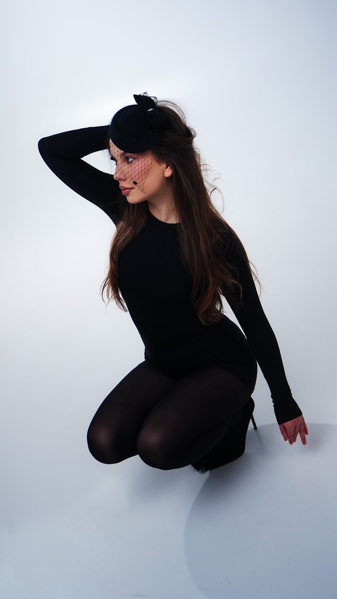

A verified-talent platform that reads your book the way a booker does — and composes the card that circulates for you.
Palette lifted from your own pixels. Layout solved from the image's quiet zones. A card that was in the picture all along.